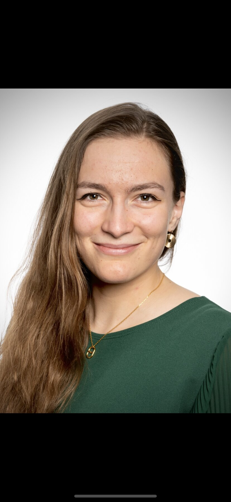

PhD Student in Robotics
École Polytechnique Fédérale de Lausanne
Supervised by Prof. Josie Hughes
My research topics include soft, conformable sensors for hockey helmets, smart yarns and fabrics, robotic garments. I turn knit into tech! 🧶🤖
I am a PhD student at the CREATE Lab (EPFL), where I research knitted and crocheted textile structures as well as metamaterial sensors as a route to soft, conformal wearable sensors and actuators combining textile design, materials science, and sensing to create functional garments for soft robotics applications, human interaction, sports gear.
My background spans soft robotics, adaptive control, data-driven design, and more generally mechanical and electrical engineering. My master's thesis at the University of Oxford (Soft Robotics Lab) applied Feedback Error Learning and neural-network-based adaptive control to a soft pneumatic arm. Earlier, I co-authored a publication on edible robotic jumpers at EPFL's Laboratory of Intelligent Systems, and worked in AI-driven medical imaging at the NeuroRestore Laboratory.
Publication — "Edible Robotic Jumper Powered by Shell Snapping" — co-authored with Dr. Bokeon Kwak, Dario Floreano's lab, EPFL · 2023
EPFL WISH Excellence Scholarship for Master Thesis — awarded for academic excellence and research potential in robotics.
EPFL Prize for Best Social Sciences Work — for the medium-length film Rupture. See coverage →
Member of Swiss Solar Boat — Electronics and control team.
Swiss Rowing Champion — and vice-champion in 2017. Eight years of national-level practice.
Richelieu Madame de Staël Literature Prize, Geneva — for the short story Puissent nos cœurs battre.